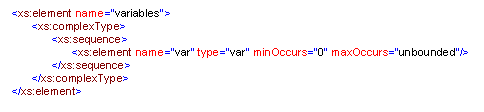

|
Background of Computing and Distributed Technologies
Introduction
This site provides the necessary background on modern computing and distributed technologies in order to better understand Optimization Services. We explain all the technologies in the Optimization Services context.
Historically, distributed computing has been focused on the problem of distributing computation between several systems that are jointly working on a problem. The most often used distributed computing abstraction is the RPC – Remote Procedure Call. RPC allows a remote function to be invoked as if it were a local one. The history of RPC-style distributed computing is fairly complicated. More or less it started with Sun Microsystems’ Open Network Computing (ONC) RPC system in 1987, as the basic communication mechanism for its Network File System (NFS). NFS is now supported on UNIX, Linux, and many other distributed operating systems. NFS is used to access directories and files located on remote computer as if those directories and files were located on the local computer.
The first major effort toward language-independent and platform-neutral distributed computing was taken by the Object Management Group (OMG) in 1989. OMG is a consortium that includes over 500 members. In 1991, OMG delivered the first version of Common Object Request Broker Architecture (CORBA), a distributed objects platform. CORBA allowed programs located in different parts of the network and written in different programming languages to communicate with each other. The term Object Request Broker (ORB) gained popularity to denote the infrastructure software that enabled distributed objects. In 1996, CORBA version 2 introduced the Internet Inter-ORB Protocol (IIOP) as major enhancements in the core distributed computing model and higher-level services that distributed objects could use. IIOP established CORBA’s dominance in distributed computing for the next 5 years until the advent of Web services.
Microsoft started its own distributed computing initiative around 1990. In 1996, Microsoft delivered the Distributed Component Object Model (DCOM), which was closely tied to previous Microsoft component efforts such as Object Linking and Embedding (OLE), non-distributed COM (or OLE2), and ActiveX (lightweight components for web applications). To compete with CORBA, the next year (1997) Microsoft introduced COM+ to bring DCOM much closer to the CORBA model for distributed computing.
In the same year, Sun Microsystems added Remote Method Invocation (RMI) in its Java Development Kit (JDK 1.1). RMI is similar to CORBA and DCOM, but works only with objects written in Sun’s Java programming language. In Sun’s 1999 Java 2 Enterprise Edition (J2EE) platform, the company integrated RMI with CORBA’s IIOP.
Unfortunately, CORBA is very complex. It requires significant effort to implement. The much simpler XML-based XML-RPC appeared in 1999 and became a strong competitor to CORBA. XML-RPC was inspired by two earlier protocols. The first is an anonymous RPC protocol designed by a person named Dave Winer. The other more important inspiration was an early draft of the SOAP protocol.
The name of Simple Object Access Protocol (SOAP) appeared for the first time around 2000, which heralded the era of Web services. Our implementation of Optimization Services is entirely based on SOAP and adopts the same architecture as that of Web services.
Although Remote Procedure Call has been the traditional approach for building distributed systems, there are other alternatives such as data-oriented or document-centric messaging (for asynchronous invocation). Rather than being focused on distributing computation by specifically invoking remote code, messaging takes a different approach. Applications that communicate via messaging run their own independent computations and communicate via messages that contain pure data. IBM released its messaging product MQSeries in 1993. Microsoft’s messaging product is the Microsoft Message Queuing Server (MSMQ). Sun Microsystems’ J2EE defines a set of APIs for messaging through the Java Messaging Service (JMS). There is no attempt to define a standard interoperability protocol for messaging servers.
Java and OS design philosophies
In the traditional optimization and computing areas, most codes are implemented in C/C++. In the Optimization Services project where approriate , besides C/C++, we also use the Java programming language to implement the Optimization Services (OS) library and build our Optimization Services system. The OS library is designed to provide a foundation of reusable objects to speed the development of OS applications and make them more reliable. Today many Operations Research applications are developed from scratch to solve a specific problem without the benefit of a foundation of tested software. This is time consuming and expensive due to the complexity and the thorough testing that is required of OR applications. By reusing the many proven classes in the OS library, OS developers can build OS applications more efficiently and the OS system will be more reliable.
In order for OS library to be accepted, it must be immediately useable and at the same time provide the depth and flexibility required for advanced applications. Our OS library provides depth and flexibility through the extensive use of interfaces to abstract methods and data structures. All methods use only these interfaces and abstract classes when accessing internal objects and this allows developers to substitute an object that provides new functionality.
Java was selected because it is platform independent and provides a rich environment for application (esp. client and server applications) development. The data structures and methods used in OS applications have a large impact on performance and using Java will make efficient components more widely available and easier to use. Moreover most current surveys and benchmarks find that Java performance on numerical code is comparable to, or better than that of C++, with indications that Java's relative performance is continuing to improve.
a) Portability
Most programs created on a particular operating system must be converted, or ported, before they can run on a different operating system. A major advantage of the Java programming language is that users can run the same Java programs on computers using different operating systems. The phrase “write once, run anywhere” is often used to describe Java programming. This is also the goal of Optimization Services.
b) Java Virtual Machine (JVM)
JVM is software that runs Java programs. The virtual machine creates a simulated software environment on a computer, which allows Java programs to run outside of the computer’s operating system. This helps prevent malfunctioning Java programs from crashing a computer system and makes it possible for Java programs to run on different platforms. The Java virtual machine also automatically handles such tasks as garbage collection, threading, security, and loading classes. The Optimization Services server that we implemented to host services like solvers relies on JVM. Thus hosted services enjoy all the support from JVM.
c) Free Environment and Open Source Community Support
To design and implement an open standard framework like the Optimization Services framework, Java is a good fit and almost a necessity. Java is the most widely adopted language in the general Open Source and free software community. The language support has a much larger audience base. In fact, all the required libraries used in the OS library are open source. There are different classes of “free software,” and there are gray areas between each class. For more information on Open Source and free software and Open Source license, visit the site http://www.opensource.org/.
d) Objected-oriented Language
Java is a purely objected-oriented programming language. To design a good distributed system framework like the OS framework, the Object-Oriented Programming (OOP) ideology and philosophy should be adopted. We describe OOP in more detail in the next section.
Object-Oriented Programming (OOP)
Object-Oriented Programming is a programming concept developed to make programs more understandable and easier to correct and modify. In the OOP concept, a program is made up of one or more objects, which are small, re-usable chunks of code. Each object is used to perform a specific task and can be shared with other programs. Distributed object-oriented systems require object-based RPC. It is almost a necessity to adopt OOP when designing any good distributed system.
In our Optimization Services system, each component is designed as an object. A communication Agent object, for example, provides methods for generic networking. The mechanism to create the Agent objects is the Agent class. Users of the Agent class are provided with a specification of how the class works, but they need no knowledge of how the Agent class is implemented. The separation of specification from implementation is called information hiding. In our example, the Agent class hides all the information of our Optimization Services Protocol based networking. Classes are more formally called“abstract data types” or ADTs in objected-oriented programming terminologies. ADT is the most important characteristic of any OOP language.
A second characteristic of OOP languages is inheritance. In our Optimization Services implementation, for example, there is a library package for basic algebra operations. In the common algebra package, we define a SparseMatrix. A SparseMatrix class is certainly a matrix. Thus the class SparseMatrix can be said to inherit from class Matrix. In this context, class Matrix is called a base class and class SparseMatrix is called a derived class. SparseMatrix can in turn have its own derived classes, for example, DoubleSparseMatrix for a sparse matrix with double precision decimal matrix entries, and BigSparseMatrix, for a sparse matrix with arbitrarily precise matrix entries. An inheritance hierarchy of matrices is shown in the following figure.
The third characteristic of object-oriented programming language is polymorphism, a dynamic binding of messages to method definitions. This is supported by allowing one to define polymorphic variables of the type of the base class that are also able to reference objects of the derived classes of that class. The base class can define a method that is overridden by its subclasses. The operations defined by these methods are similar, but must be customized for each class in the hierarchy. When such a method is called through the polymorphic variable, that call is bound to the method in the proper class dynamically.
Polymorphism is the key idea in designing nonlinear programming features in Optimization Services. In the case of nonlinear programming, a key aspect of any nonlinear instance parser is some sort of expression tree for the nonlinear part of a model instance. Consider the following Rosenbrock nonlinear function:
An expression tree for the function is illustrated in the following figure.
One approach is to use a C-structure for each node in the expression tree. The structure can store information as to operator or operand type and pointers to children nodes. A tree-walking method is used to perform operations on the expression tree such as function or derivative evaluations. See the following figure for an illustration the essential idea.
In the above figure,
expr is a C-structure, *e a pointer to the root node of expression tree and opnum is an integer value denoting the node type.
Currently there are more than 200 nonlinear operators supported in the Optimization Services nonlinear Language. OSnL is included in the Optimization Services instance Language (OSiL) for nonlinear extension. A fundamental problem with the above approach is that every method that operates on the expression tree requires a switch with a whole series of case statements (or a sequence of more than 200 if statements) making the code very complex. Updating the code to reflect new operators can be even more time consuming and error prone.
A second approach is to use an object oriented language such as C++ or Java and define a class for each type of node in the expression tree. For example, define a “plus” node class, a “minus” node class, an “exponential function” class, etc. However, for an object-oriented approach to be effective it is necessary to avoid the use switches and complicated logic as much as possible. This is achieved by having each node class extend a single node class and using polymorphism.
In our Optimization Services nonlinear Language (OSnL) library for reading nonlinear expressions, we first define an abstract class OSnLNode. All of the operator and operand classes used to define a nonlinear term extend the base class OSnLNode. For example, there is a class OSnLNodeTimes that extends the base class OSnLNode. This is a significant benefit, because we can construct an expression tree of homogenous nodes, i.e. the OSnLNode. Methods that operate on the expression tree to calculate function values, derivatives, postfix notation, etc. do not require switches or complicated logic. Since each operator and operand class extends the OSnLNode, class polymorphism eliminates the need for switches. For example, the abstract class OSnLNode has an abstract method calculateFunction that takes a double precision array of variable values and evaluates the expression tree for the give variable values. Every class that extends OSnLNode must implement this method. Consider the node class corresponding to the plus operator, OSnLNodePlus. The calculateFunction method for the OSnLNodePlus class is listed in the following figure. Compare the logic in the following with the logic in above figure. Through the use of polymorphism and recursion the need for switches is eliminated. Because of this design, adding a new operator element is easy. It is simply a matter of adding a new class and implementing the calculateFunction() method.
Networking background and terminologies
a) Network and network software
We sometimes use the term Optimization Services (OS) network. By that we mean a group of connected computers that allow people to share optimization services. The size of an OS network is therefore the number of computers in this group.
The OS Network software consists of programs that 1) manage the OS network, 2) provide optimization services, and 3) allow computers to communicate and share information on the network.
1). Since Optimization Services relies on widely accepted networking protocols, no software (i.e. network operating system) that manages the OS network needs to be provided. Most of the time, Optimization Services is based on the Internet. Every modern computer has built-in Internet support, so there is no extra installation or configuration in order to run Optimization Services applications. If Optimization Services is used on an Intranet, popular Local Area Network software is also readily available.
2). Optimization software developers (e.g. solver developers) are the ones who provide the optimization services. Most software is built independent of Optimization Services. Therefore some interfacing adaptations need to be made in order to make the software Optimization Services compatible.
3) We as the Optimization Services developers provide the OS server software and library to help OS computers to communicate and share optimization services on the OS network. In this thesis, OS server and library are what we mean by OS network software.
b) Network protocols and standards
The standard Open Systems Interconnection (OSI) networking protocol model specifies seven layers in the OSI model – Application, Presentation, Session, Transport, Network, Data Link and Physical from top to bottom. But OSI is only a reference model and it may be more detailed than necessary. Sometimes two OSI layers are simple enough that they are implemented together. In particular, the best known protocol, the Internet protocol (TCP/IP), aggregates some of layers in the OSI model. TCP/IP is a collection of protocols and it has only 4 distinct layers -- network access (e.g. Ethernet), internet (e.g. IP), transport (e.g. TCP), and application layers (e.g. HTTP).
Many products (including optimization related products) are needed to create and maintain a network. Before a network can function properly, all the products on the network must be able to communicate with each other. Before the protocols are introduced, there was no standardized way to exchange information on a network. Many companies developed their own network hardware or software without considering how different devices would work with other products on a network.
Most companies now follow the standard protocols so that their products will work with products developed by other companies. When companies follow standards, they ensure their devices will communicate with other devices on a network. It seems that the standards at the bottom layers (hardware) tend to be more mature than those at the top. The reason may be due to more diverse types of software at the higher level, which need to allow user flexibility. For example, Optimization Services Protocol (OSP) is a domain-specific application protocol. There can be many domains that need application protocols and benefit from standardization.
A major benefit of OSP is that it is an open standard protocol like TCP/IP. This means that any company or person can design a device or program that uses OSP without having to pay a royalty or licensing fee. Another major advantage of OSP is that due to the layering characteristic of networking protocols, OSP can leverage the many generic networking mechanisms from its underlying protocols and concentrate on domain specific (i.e. optimization) designs. For example OSP can be transmitted (directly or indirectly) over the Secure HyperText Transfer Protocol (HTTPS) instead of the normal HTTP protocol. HTTPS is then used to securely transfer information on the Internet. HTTPS encrypts and decrypts the information exchanged between a server computer and a client computer using a system called Secure Sockets Layer or SSL.
c) Client/Server networking
A client/server network consists of a central computer that serves resources and services to other computers, called clients. Traditional centralized optimization systems are typically based on such networking.
A client is a computer that requests optimization-related services or access to optimization information stored on a server. People use client computers to enter and display information processed by an optimization server on a network. An optimization server is usually dedicated to providing optimization-related services on a network. As with all centralized networks, administrative tasks such as result backup and security monitoring must be performed on a regular basis to ensure efficiency and reliability. If the optimization server is tampered with or malfunctions, the entire optimization system will be affected. As client/server networks require specialized, dedicated hardware and software, they can be very expensive.
d) Peer-to-peer networking
Our OS network is essentially a peer-to-peer network, as it allows all the computers on the network to store and share their resources and services, although on each peer-to-peer link, the networking is still set up on a client/server basis. There are no central computers that control the network. Software applications, such as optimization solvers, and the OS networking software/system (the OS library and OS server) run on each computer. Each computer is set up to share and access information and resources on the OS network. Since computers on the OS peer-to-peer network are configured to share and access information, individual developers administer their own computers. There is usually no dedicated system administrator for the OS network.
If a computer on an OS network is not turned on or malfunctions, the other computers on the network will not be able to access the computer’s resources and services. However, resources and services on other computers on the network will not be affected. So peer-to-peer network is more fault-tolerant than a centralized client/server setup. It has to be acknowledged that since developers on the OS peer-to-peer network store files and services on their own computers, anyone may be able to access their computers. This makes information on the OS peer-to-peer network less secure than the traditionally more centralized optimization systems. The cost of a peer-to-peer network is, however, generally low.
XML
Optimization Services is an XML-based framework. The OS framework uses XML to specify both communication and representation standards.
XML stands for Extensible Markup Language. It is a subset of Standard Generalized Markup Language (SGML) constituting a particular text markup language for representation and interchange of structured data. SGML is a standard for how to specify a document markup language or tag set. HTML is another example of SGML.
But unlike HTML, which defines a fixed set of tags describing a fixed number of elements, XML is a meta-markup language in which we can define the tags we need to describe a document’s structure and meaning. The tags must be organized according to certain general principles, but they are quite flexible in their meaning. For example, as we are working with optimization and need to describe objectives, variables, constraints, and so forth, we can create tags for each of these elements. The tags that we create can be documented in a schema. For now, think of a schema as a vocabulary and syntax for certain kinds of documents. For example, our Optimization Services instance Language (OSiL.xsd ) is a schema that describes a vocabulary and syntax for an optimization problem instance, and we can use the schema to validate an optimization instance. The validation mechanism ensures the stability of the Optimization Services standards. Formatting of our optimization instance can be added through additional style sheets (e.g. XSL), but the instance document itself only contains tags that describe the optimization contents, not the appearance. So XML is a semantic markup language.
An XML representation consists of data delimited by <element> tags, much like an html representation of the content of a Web page. Each <element> tag can have space-delimited attributes in the form of “name=value” and can contain embedded elements:
<element1 attrName1="value1" attrName2="value2">
<element1 ...>
...
</element1>
<element2 ...>
...
</element2>
</element1>
Elements have to be closed with a start tag and an end tag such as:
<element ...>...</element>
If an element does not contain embedded elements, the start and end tags can be combined such as:
<element .../>
to save some space.
New collections of XML tags are defined for any specialized purpose by specifying a schema. One perceived disadvantage of an XML is its verbosity – the considerable file space taken up by tags – but in fact the tags only increase file size by a constant factor, which can be considerably reduced by use of optional alternatives to an ASCII representation.
Why does Optimization Services use XML
XML became a specification at the World Wide Web Consortium (W3C) in 1998. Since then XML has increasingly been adopted as a standard for information interchange of all kinds.
a) Domain-specific
This is probably the biggest reason that the Optimization Services is XML-based. XML allows workers in each research area to develop their own XML dialects. Thus XML is ideal for large and complex optimization instance documents. For example, we can create “variable” and “constraint” tags in a way that it is most efficient and effective for storing, transmitting and parsing a mathematical program. XML not only lets us specify a vocabulary for the document, but also lets us specify the relations between elements. For example, we can require that every variable has a lower bound and if the lower bound is missing, it defaults to 0.
Open
Optimization Services, being an open framework, requires the standards that it uses to be completely open and freely available on the Internet. XML is a W3C standard that is nonproprietary, unencumbered by copyright, patent, trade secret, or any other intellectual property restriction.
Interoperable
Optimization Services is intended to solve communication issues between heterogeneous components over a distributed system. XML can be used on a wide variety of platforms and interpreted with a wide variety of tools. XML supports a number of key standards for character encoding, allowing it to be used all over the world in a number of different computing environment. XML complements our programming language Java, another force for interoperability, very well. A considerable amount of early XML development has been in Java. Because the document structures behave consistently, Optimization Services parsers that interpret them can be built at relatively low cost in many languages. Also by storing an optimization instance in XML format, we are bringing the model closer to the data source and facilitating the integration of optimization-based solutions into IT infrastructures.
Presentable
XML-based Extensible Stylesheet Language (XSL) offers a convenient way to specify translations of XML documents. For example if an optimization solution is formatted in Optimization Services result Language (OSrL), XSL can be applied to the solution instance to easily produce an HTML document that displays the solution data in a user-friendly form.
Simple
XML provides both programmers and document authors with a friendly environment, at least by computing standards. XML documents are built upon a core set of basic nested structures. While the structures themselves can grow complex as layers of detail are added, the mechanisms underlying the structures require very little implementation effort. Furthermore, XML is well-documented. The W3C’s XML specification and numerous books and resources tell people how to read and write XML data. At a low level, XML is a simple data format. XML can be written in pure ASCII text as well as a few other well-defined formats. At a higher level, XML is self-describing. Even though most of the Optimization Services representations are intended to be read by computer programs, they are certainly readable by humans. This certainly helps in developing and debugging the Optimization Services components.
Wny not MathML
An example of XML is given in the following figure, expressed in MathML, a dialect of XML that is of some particular interest in this thesis. A dialect is an implementation of domain-specific XML notation governed by a standard schema designed to support languages such as chemical markup (CML), mathematical markup (MathML) and all the representation-related OSxL in Optimization Services. There are two flavors of MathML: Presentation MathML and Content MathML. The following figure shows the nonlinear expression in Presentation MathML, so-called because it describes math notation without trying to capture meaning.
Every XML document begins with an XML declaration, the first line in the above example. Then we define some overhead such as the schema location to validate the XML. But the more important part is that every MathML document starts with the root element <math>. Again there is some overhead in the root element such as defining namespaces used to qualify the elements and avoid potential naming conflicts. For simple clarification purposes, in the following XML examples, we skip the overhead parts.
Content MathML still has <math> as its root element. The fundamental idea of Content MathML is to apply (therefore the element <apply>) functions and operators to other elements. To do this, Content MathML uses prefix notation. Prefix notation is when the operator comes first and is followed by operands. There are three functions shown in the above example: <power>, <plus>, and <times>. These functions are applied to number tokens (e.g. <cn>2</cn>), identifier tokens (e.g. <ci>X1</ci>), or expressions that again start with the <apply> element.
Content MathML allows information interchange to be more precise to software and systems that are able to manipulate the mathematics. Since optimization is about numerical computing, Content MathML can theoretically be used in optimization problems to represent mathematical expressions, especially nonlinear expressions. But in extending our Optimization Services instance Language (OSiL) from linear to nonlinear optimization, we decided against using Content MathML. Instead we designed our own Optimization Services nonlinear Language (OSnL) to represent nonlinear expressions in OSiL. We summarize the main reasons below.
- Content MathML is too comprehensive. Content MathML is designed to support the needs of a very diverse set of users. It includes far more than is required in the modeling/optimization community. A significant number of features in Content MathML will never be used by optimization services and modeling systems (e.g. vector calculus, inclusion of Presentation MathML). If an instance unintentionally includes unnecessary MathML features which shouldn’t be allowed, the MathML schema will still validate even though none of the solvers would ever recognize such features. We believe simplicity is a virtue and that means including only what is necessary.
- Content MathML is not specifically designed to represent instances or instance components of mathematical programs. OSiL is designed to represent instances of mathematical optimization problems and OSnL is designed to natively complement OSiL for nonlinear extensions. Certain features in OSnL that are critical in optimization such as XPath node, user functions, and variable subscripts are not naturally supported in Content MathML. For example, in Content MathML there is no built-in <var> tag to represent variables and variable subscripts. In OSiL a variable is naturally expressed as <var idx="1"/> and <var idx="2"/>. In the above MathML examples, we used <ci>X1<ci> and <ci>X2<ci> to artificially make up the variables. The concatenation of a variable name with an index can be confused with other identifiers. Alternatively, we might use <ci><sub><mi>x</mi><mn>1</mn></sub></ci> which is a hopelessly verbose and memory consuming way to express a subscript.
- Content MathML is not under control of the optimization community. This is perhaps the single most important reason not to use MathML. We can add optimization-related features to OSiL as needed. Using MathML to support optimization features is awkward at best, and it is unlikely we can get the W3C to adopt optimization-specific features in a timely fashion. Control of a standard for optimization is better left to an organization under the control of the Operations Research community.
- OSiL and OSnL are designed to be easily parsed and used by libraries in the OS API. Content MathML has elements in the following categories: tokens, constructors, operators and functions, qualifiers, constants and symbols, and semantic mapping elements. However, for representing mathematical expressions, OSnL has a very consistent recursive and object-oriented design where every element is an “nl node” that takes zero to an indefinite number of children as arguments. This design results in extremely convenient parsing. There is a one-to-one mapping between XML DOM parse tree elements and the corresponding OS Expression Tree. There is also a one-to-one correspondence between each node element in the OS Expression Tree and each node class in the parsing library API. Thus parsing an OSiL document is much easier than parsing a Content MathML document.
However, in order to be as consistent with MathML as possible we adopt the MathML element names whenever possible, for example <power> for the power function. The following figure shows the same expression in OSnL.
There are several things worth noticing. First OSnL is usually embedded in OSiL. The root element in the above example has an attribute idx=”9” to indicate that it is part of the 9th constraint, whose linear expression part is to be found in the 9th row or constraint, of the OSiL instance. By separating out linear part from nonlinear part of an expression, we can take advantage of sparsity, which is a necessity in large-scale optimization. The second thing to notice is that we avoid the nuisance of unnecessary <apply> elements by adopting a recursive design. The result is a cleaner and shorter representation. The third thing to notice is that OSnL has the built-in <var> element which can take index (“idx”) and coefficient (“coef”) as its attribute. Variables appear so often in optimization that they have to be treated specially to make optimization practical. By designing an XML language natively tailored to optimization, we can achieve both efficiency and effectiveness in representation and communication.
XML Schema
In order to facilitate communication between solvers and modeling languages, the instance files must conform to an accepted standard. Otherwise, parsing optimization instance files in a meaningful way is impossible. XML Schema is a database-inspired method for specifying constraints and enforcing standards on XML documents. XML Schema is itself an XML-based language.
Given an XML Schema, standard tools are available for parsing files that correspond to it, and for building libraries to display and manipulate the contents of these files [103][119]. For each OS representation language that we introduce for working with instances, we specify representation rules in XML Schema.
We can think of the schema as a class and an XML instance that conforms to the schema as an object or instance of the class. Just as a class very explicitly describes member and method names and properties, an XML Schema explicitly describes element and attribute names and properties.
For our <variables> element in OSiL, the following figures show a section of our OSiL Schema that specifies its structure both graphically and in text.

In essence the schema means the variables element contains a sequence of 1 or more () var elements of type also called var, which is defined below in the following figure.
This approach is very object oriented. The <var> type defined in the above figure is analogous to an abstract class in Java. In W3C XML Schema terminology it is called a named type. In order to actually have an instance file with <var> elements it is necessary to define in the schema, an element (a class) named <var> that is of type var. This is done in the part of the OSiL Schema illustrated above. This allows an instance file to actually instantiate an instance of the <var> element.
In defining the <var> type element, only the attributes listed in the above figure are allowed to be present in a var element. All of these attributes are optional. Properties of the attributes are explicitly defined. For example, the lb attribute (variable lower bound) and the ub attribute (variable upper bound) must be double precision numbers and the type attribute (variable type) must be a string value that is either C (continuous), B (binary), I (integer), or S (string). We briefly discuss the basic elements in XML Schema next.
Simple Types
We can have simple types and complex types in an XML Schema. The simple type is a restriction of the text that appears in an attribute or element. For example here is a simple type definition of an element.
<element name="source" type="xs:string" />
In this case, the defined element source cannot have attributes and can only contain text. We can define more complicated simple types such as
<xs:element name="maxOrMin" minOccurs="0">
<xs:simpleType>
<xs:restriction base="xs:string">
<xs:enumeration value="max"/>
<xs:enumeration value="min"/>
</xs:restriction>
</xs:simpleType>
</xs:element>
In this example we are defining a simple type called maxOrMin (objective sense) that has as its base the type string. But we further restrict the text in the attribute to take on values of either max or min.
Complex Types
Complex types are elements that contain other elements or have attributes. There are two different complex types: anonymous and named. Here is an example of an anonymous complex type. In the tag <xs:complexType> there is no name, hence the term anonymous.
<xs:element name="con" minOccurs="0" maxOccurs="unbounded">
<xs:complexType>
<xs:attribute name="name" type="xs:string" use="optional"/>
<xs:attribute name="ub" type="xs:double" use="optional"/>
<xs:attribute name="lb" type="xs:double" use="optional"/>
<xs:attribute name="mult" type="xs:int" use="optional"/>
</xs:complexType>
</xs:element>
We could not use con (constraint) as a type in defining other elements. A named complex type is much like an abstract class in C++ or Java. That is, you cannot actually have an object in the class but you can have objects in classes derived from it. Below is an example of a named type intVector. In the complexType tag there is now an associated name, in this case intVector.
<xs:complexType name="intVector">
<xs:choice>
<xs:element name="base64BinaryData" type="base64BinaryData"/>
<xs:element name="el" maxOccurs="unbounded">
<xs:complexType>
<xs:simpleContent>
<xs:extension base="xs:nonNegativeInteger">
<xs:attribute name="mult" type="xs:positiveInteger" use="optional" default="1"/>
<xs:attribute name="incr" type="xs:int" use="optional"/>
</xs:extension>
</xs:simpleContent>
</xs:complexType>
</xs:element>
</xs:choice>
</xs:complexType>
Here is another example of a named complexType.
<xs:complexType name="sparseVector">
<xs:sequence>
<xs:element name="idx" type="intVector" maxOccurs="unbounded"/>
<xs:element name="nonz" type="doubleVector"/>
</xs:sequence>
</xs:complexType>
Note that in this definition of a named complexType we are using the named type <intVector>. For example, the element idx is of type intVector. We could now use this <sparseVector> elsewhere as to define other elements. We can also define an anonymous complexType sparseVector that is of named type sparseVector. That is,
<xs:element name="sparseVector" type="sparseVector" minOccurs="0" maxOccurs="unbounded"/>
We can also do a kind of inheritance through extension. First we define a base class called <baseProgramData>.
<xs:complexType name="baseProgramData" mixed="false">
<xs:sequence>
<xs:element name="constraints" type="constraints" minOccurs="0"/>
<xs:element name="variables" type="variables"/>
<xs:element name="multiObjectives" type="multiObjectives" minOccurs="0"/>
<xs:element name="coefMatrix" type="coefMatrix" minOccurs="0"/>
</xs:sequence>
</xs:complexType>
Note in this definition the mixed attribute is set to false. This means that the <baseProgramData> element can only contain the specified elements. If the mixed attribute is set to true, the <baseProgramData> element can contain text or elements. Now extend this base class to allow more elements, such as nl (for nonlinear program extension) and cones (for cone programming extension).
<xs:complexType name="programData">
<xs:complexContent>
<xs:extension base="baseProgramData">
<xs:sequence minOccurs="0" maxOccurs="unbounded">
<xs:element name="nl" type="nl" minOccurs="0" maxOccurs="unbounded"/>
<xs:element name="cones" type="cones" minOccurs="0"/>
<xs:element name="stages" type="stages" minOccurs="0"/>
<xs:element name="stochastic" type="stochastic" minOccurs="0"/>
<xs:element name="userFunctions" type="userFunctions" minOccurs="0"/>
<xs:element name="simulations" type="simulations" minOccurs="0"/>
<xs:element name="xmlData" type="xmlData" minOccurs="0"/>
</xs:sequence>
</xs:extension>
</xs:complexContent>
</xs:complexType>
Similar to the extension, we can also define a restriction on a complex type base. But it is less often used.
Substitution Groups
When deriving a new complex type by extension one can only add new elements or attributes to the base type. When deriving a new complex type by restriction one can only put additional restrictions on existing elements and attributes. Substitution groups allow a new content model. They are somewhat like the concept of polymorphism in object oriented programming in that you can substitute any type in a substitution group for the base type.
For example, to represent a generic tree node (operator or operand) for a nonlinear expression, in our OSnL Schema, we create OSnLNode, a complex type that effectively is like a Java abstract class.
<xs:complexType name="OSnLNode" mixed="false">
<xs:annotation>
<xs:documentation>This is a generic node from which we derive operator nodes</xs:documentation>
</xs:annotation>
</xs:complexType>
The annotation element is just an XML Schema comment that can be ignored. Then we create a substitution group based on the named element OSnLNode that is of type OSnLNode. So we can think of OSnLNode as a derived class.
<xs:element name="OSnLNode" type="OSnLNode" abstract="true">
<xs:annotation>
<xs:documentation> Set abstract to true in order to create a substitution group</xs:documentation>
</xs:annotation>
</xs:element>
Note the abstract attribute is set to the value of true in order to create the abstract class.
Next, we create the actual elements that are in the substitution group for OSnLNode. For example, we might have an OSnLNode that corresponds to subtraction. First we create the abstract class for this operation.
<xs:complexType name="OSnLNodeMinus">
<xs:complexContent>
<xs:extension base="OSnLNode">
<xs:sequence minOccurs="2" maxOccurs="2">
<xs:element ref="OSnLNode"/>
</xs:sequence>
</xs:extension>
</xs:complexContent>
</xs:complexType>
From this abstract class OSnLNodeMinus we create the derived element minus that is in the substitution group OSnlNode.
<xs:element name="minus" type="OSnLNodeMinus" substitutionGroup="OSnLNode"/>
Note that the minus element requires exactly two child elements.
In a similar fashion, we define all other OSnL nodes such as plus, times, sin, sum, PI, var, geq, if, PI, xPath, userF, quadratic. For nodes such as sin, the corresponding OSnLNodeSin requires exactly one chide element, as the sin operator is a unary type. For nodes such as sum, the corresponding OSnLNodeSum requires one or more child elements, as the sum operator is an indefinite type. For nodes such as PI, the corresponding OSnLNodePI requires zero child elements, as the PI operator is a constant.
Essentially every operator or operand that appears in an expression tree is generically regarded as a node of type OSnLNode. This objected-oriented style treatment provides a significantly simple and powerful way to construct a nonlinear expression So for example, to add nonlinear extensions to our OSiL, we simply define an element nl that holds the nonlinear term for a row specified by the attribute idx, which indicates a row number of an objective or constraint. As shown below, each nl element has exactly one child elements, the expression tree root, which can be anything in the substitution group for OSnLNode. Of course, we do not know ahead of time whether the tree root will be a plus or a times node. But whatever it may become, it has to be of a generic type OSnLNode.
<xs:element name="nl" type="nl" minOccurs="0" maxOccurs="unbounded"/>
<xs:complexType name="nl">
<xs:sequence minOccurs="1" maxOccurs="1">
<xs:element ref="OSnLNode"/>
</xs:sequence>
<xs:attribute name="idx" use="required" type="xs:int"/>
</xs:complexType>
When a concrete expression tree is finally constructed, it may look like
<nl idx="9">
<power>
<plus>
<var idx="1" coef="2"/>
<var idx="2" coef="3"/>
</plus>
<number value="2"/>
</power>
</nl>
for the nonlinear expression that appears in the 9th row (or constraint) of a mathematical program. Every node in this expression tree has to follow the constraints specified by the node’s corresponding type, e.g. the number of child nodes it can have.
Namespaces
It is possible for different XML vocabularies to use the same element name, yet the element has a different meaning depending on the vocabulary. For example in one vocabulary the element <title> might have a very different meaning than in another vocabulary. Furthermore, when developing vocabulary a.xsd one might wish to borrow elements from another vocabulary b.xsd or allow elements from vocabulary b.xsd to be used instead of elements from a.xsd. For example, we have developed our instance representation language OSiL. A user might wish to use our other optimization languages and services but use, for example, MathML for instance representation. This is easily accomplished through the use of namespaces. The local element together with the name space determines a globally unique name known as a qualified name.
Assume a user wishes to represent a math program using MathML rather than OSiL. They can simply put the nonlinear program inside the <math> tag and use the appropriate name space. For example, one approach is:
<math xmlns="http://www.w3.org/1998/Math/MathML" xmlns:xsi="http://www.w3.org/2001/XMLSchema-instance" xsi:schemaLocation="http://www.w3.org/1998/Math/MathML http://www.w3.org/Math/XMLSchema/mathml2/mathml2.xsd">
<apply>
<power/>
<ci>x</ci>
<cn>2</cn>
</apply>
</math>
This syntax declares that the <math> element and all of its children are in the MathML vocabulary. That is, all of the elements are qualified and are in the default namespace MathML.
An alternative way to qualify the elements is through the use of a prefix.
<ml:math xmlns:ml="http://www.w3.org/1998/Math/MathML" xmlns:xsi="http://www.w3.org/2001/XMLSchema-instance" xsi:schemaLocation="http://www.w3.org/1998/Math/MathML
http://www.w3.org/Math/XMLSchema/mathml2/mathml2.xsd">
<ml:apply>
<ml:power/>
<ml:ci>x</ml:ci>
<ml:cn>2</ml:cn>
</ml:apply>
</ml:math>
Now, if we had written <ci>x</ci> instead of <ml:ci>x</ml:ci>, then the <ci> would be unqualified and potentially confused with an element defined in other schemas that is named the same.
The namespace that we use to qualify all the OSxL schemas is “os.optimizationservices.org” and it should be different from any other namespaces in the world as we have reserved the domain name “optimizationservcies.org.”
Import and Include
When working in the same name space it is often convenient to organize a set of schemas in different files. We can then use one schema in another through the include element. For example, in the instance language OSiL.xsd, we need to define the nlNode element that is in the nonlinear language OSnL.xsd. To do this, we use the include statement as follows.
<xs:include schemaLocation="OSnL.xsd"/>
When schemas are in different name spaces we need the import element. For example, in OSiL, we allow the use of MathML to describe a nonlinear program. In order to validate a document against the os.optimizationservices.org namespace we need to import the MathML namespace. This is done as follows.
First, in the root element we include the attribute:
xmlns:mathML="http://www.w3.org/1998/Math/MathML"
Then we include an <import> element as follows:
<xs:import namespace="http://www.w3.org/1998/Math/MathML" schemaLocation="http://www.w3.org/Math/XMLSchema/mathml2/mathml2.xsd"/>
Then in the schema we declare a <math> element.
<xs:element ref="mathML:math" minOccurs="0"/>
In this the case the <math> element is in the MathML namespace. However, we can achieve the same result with
<xs:element name="math" type="mathML:math.type" />
in which case the <math> element is in the os.optimizationservices.org namespace.
As a second example in OSiL we build up our nonlinear terms recursively through the abstract element OSnLNode. We can allow users to include an OSnLNode element that is a MathML expression. First we import the MathML namespace as we illustrated above. Next we define the <math> root element in the MathML vocabulary as follows:
<xs:element name="math" type="mathML:math.type" substitutionGroup="nlNode"/>
Then we define an OSnLNode which is really MathML.
<nl idx="2">
<math xmlns:mathML="http://www.w3.org/1998/Math/MathML">
<mathML:apply>
<mathML:power/>
<mathML:ci>x</mathML:ci>
<mathML:cn>2</mathML:cn>
</mathML:apply>
</math>
</nl>
In this example, the element <math> is actually in the namespace os.optimizationservices.org, but its children are in the MathML namespace.
SAX and DOM Parsing
Our OSiL instance is used to link modeling languages with solvers, typically over a network. In our design, we expect a library/API to sit between the two and translate the XML instance into a format that the solver can understand. To this end, the XML file must be parsed. There are two basic approaches to parsing an XML file: Simple API for XML (SAX) and Document Object Model (DOM). Both are APIs that are used to translate XML documents to some format suitable for use by computer programs. To construct an XML document, DOM is used. To parse an XML document, both DOM and SAX can be used.
SAX is a set of streaming interfaces that decompose the XML documents into a sequence of predefined method calls and fire events when elements and attributes are read. SAX does not store the information in an element or attribute after it is initially read. Because of this, SAX is very efficient and has low memory requirements. But when reading through an XML document, all the previously read sections have to be remembered (stored in memory) for parsing the later sections, so SAX may become less desirable to use. This is the case in reading an optimization instance.
DOM is a set of traversal interfaces that decompose the XML documents into a hierarchal tree of generic nodes. With this approach, the XML document is read into a tree-like data structure and held in memory. In most of our parser library implementations, we use the DOM instead of SAX and then transfer the information from the DOM into our OS Expression Tree. We selected the DOM because it is easier to work with. For example, we have numerous error checking routines to make sure the data is consistent and these routines require keeping information about the problem in memory – information that is lost using SAX.
XML Authoring Tools
XML Authoring tools assist in viewing, editing XML documents or validating XML syntaxes. XML documents can be XML Schemas as well as regular XML instances. The Optimization Services project, for example, uses Altova’s XML Spy and Progress Software’s Stylus Studio. Both XML Spy and Stylus Studio are comprehensive IDEs for developing XML projects. They provide efficient and flexible environments for creating and editing XML Schemas, XML instances, XQuery and XSLT style sheets. This OS papers and presentations mostly uses both XML Spy’s text view and graphical view for design illustrations.
XML Transformation Tools
XML Transformation tools assist in transforming XML into something that can be displayed in a browser or other rendering device. XSL, and its associated language XSLT, is the main tool here. XSLT, is an acronym for Extensible Stylesheet Language Transformation, is itself an XML-based declarative programming language to transform XML files into HTML files, or other XML files, or any other plain text files. The following XSL example retrieves all the variable names from an Optimization Services instance Language (OSiL).
<?xml version="1.0" encoding="UTF-8"?>
<xsl:stylesheet xmlns:os="os.optimizationservices.org" xmlns:xsl="http://www.w3.org/1999/XSL/Transform" version="1.0">
<xsl:output method="xml" version="1.0" encoding="UTF-8" indent="yes"/>
<xsl:template match="/">
<html>
<body>
<hr/>
<h1>Optimization Services instance Language Variables</h1>
<p/>
<xsl:for-each select="os:OSiL/os:programData/os:variables/os:var">
<p/>varialbe: <xsl:value-of select="@name"/>
</xsl:for-each>
<hr/>
</body>
</html>
</xsl:template>
</xsl:stylesheet>
The result looks something like:
Optimization Services instance Language Variables
variable: x1
variable: x2
variable: y1
variable: y2
The following figure shows how the combination of XML and XSLT can serve at least the same purpose as HTML over the Internet. XSLT can be used for example to nicely display optimization results formatted in Optimization Services result Language (OSrL).
XLink and XPointer
XLink and XPointer are used to link and reference information within an XML document. XLink is a generalization of the HTML link concept, though it is at a higher abstraction level intended for general XML – not just hypertext. Thus it has more expressive power, such as multiple destinations, special behaviors, and link bases. Linking elements are identified by an xlink:form attribute with either the value “simple” or “extended.” Furthermore, each linking element contains an href attribute whose value is the URI of the linked resource. An XLink example is shown below:
<OSiLSchema xlink:form=“simple” href=“http://www.optimizationservices.org/schemas/OSiL.xsd”>Optimization Services instance Language</OSiLSchema>
HTML links generally point to a particular document. Additional anchors (pointing to a particular section, chapter, or paragraph of a particular document) are not well-supported. Unlike HTML anchors, XPointers not only allow pointing to a point in a document, but also allow pointing to ranges or spans, such as the root element of an XML document. An XPointer is usually appended to an XLink or URL separated by a “#” sign as in the following example:
http://www.optimizationservices.org/schemas/OSoL.xsd#root() .
XPointer is sort of an extension to XPath (described next) to support linking. It specifies connections between XPath expressions and Uniform Resource Identifiers (URIs or more plainly, globally unique addresses). XPath, XLink and XPointer are especially useful when some of the function evaluations in optimization problems can only be obtained from a remote Web service.
XPath
XPath is used to locate data in an XML file. It is a declarative language used to identify subsets (nodes and fragments) of an XML document. XPath is designed standalone, but it can also be used in XSLT (for pattern matching), XPointer (for addressing), XQuery (for selection and iteration) and XML Schema (for uniqueness and scope description).
Unlike many other XML technologies, XPath uses a compact, non-XML format to facilitate use within URIs and attribute values. XPath views an XML document as a tree, containing different kinds of nodes. The XML node types include root, element, text, attribute, namespace etc. XPath imposes a document order (order of occurrence of element start tags) defined on all nodes except attribute and namespace nodes. The root is always the first node. Root and element nodes have an ordered list of children. An element node is the parent of the associated set of attribute/namespace nodes, the attributes/namespaces are not children of the associated element node.
For example, given the following XML file:
<?xml version="1.0" encoding="UTF-8"?>
<stocks>
<stock name="ge" idx="2" ret=".03" mininv=".1">
<cov name="msft" idx="0" val="25"/>
<cov name="pg" idx="1" val="37"/>
<cov name="ge" idx="2" val="19"/>
</stock>
<stock name="msft" idx="0" ret=".07" mininv=".1">
<cov name="msft" idx="0" val="24"/>
<cov name="pg" idx="1" val="-10"/>
<cov name="ge" idx="2" val="25"/>
</stock>
<stock name="pg" idx="1" ret=".09" mininv=".1">
<cov name="msft" idx="0" val="-10"/>
<cov name="pg" idx="1" val="75"/>
<cov name="ge" idx="2" val="37"/>
</stock>
</stocks>
the XPath to find the return value of the Microsoft stock (ticker: msft) is:
stocks/stock[@name=’msft]’/@ret[1]
Since XPath 2.0, the XPath language has become a strict syntactic subset of XQuery 1.0, described next.
XQuery
XQuery is a query language for retrieving data items from an XML document. XQuery is designed to meet the needs of the database world and the document processing world. XQuery is to XML what SQL is to relational databases. XQuery is used in our Optimization Services (OS) Registry implementation to find registered OS solvers in a native XML database.
From the W3C XQuery introduction page: “The mission of [XQuery] is to provide flexible query facilities to extract data from real and virtual documents on the Web, therefore finally providing the needed interaction between the web world and the database world. Ultimately, collections of XML files will be accessed like databases.” With XQuery, we now have a standard syntax by which XML processors can access XML data or non-XML data exposed as virtual XML documents. XQuery expressions can replace procedural code that generates new XML structures from other XML data. Thus XQuery enables robust queries across a large set of XML documents or virtual XML data sources. In Optimization Services, the OSmL modeling language project in is based upon the XQuery standard and is designed to convert raw data in XML format into problem instances that conform to the Optimization Services instance language (OSiL) standard.
Like XPath, XQuery uses a compact, non-XML format. XQuery is essentially an extension to XPath. Where XPath serves simply to address XML document components and return result sets, XQuery adds the ability to combine the result set with locally-defined elements in order to create new XML structures. XQuery includes looping and conditional constructs that XPath 1.0 does not have. XQuery also adds a large number of new functions, as well as built-in support for XML Schema data types.
For example given the following XML file:
<bib>
<book>
<title>Large Scale Linear and Integer Optimization: A Unified Approach</title>
<author>Martin</author>
<publisher>Kluwer Academic Press</publisher>
</book>
<book>
<title>The Essential Guide to Internet Business Technology</title>
<author>Honda</author>
<author>Martin</author>
<publisher>Prentice Hall</publisher>
</book>
<book>
<title>AMPL</title>
<author>Fourer</author>
<author>Gay</author>
<author>Kernighan</author>
<publisher> Duxbury Press </publisher>
</book>
</bib>
the XQuery to find the titles of all the books written by each distinct author is:
for $a in fn:distinct-values(//author)
return (xs:string($a),
for $b in //book[author = $a]
return $b/title)
and the XQuery result is:
Martin
<title>Large Scale Linear and Integer Optimization: A Unified Approach</title>
<title>The Essential Guide to Internet Business Technology</title>
Honda
<title>The Essential Guide to Internet Business Technology</title>
Fourer
<title>AMPL</title>
Gay
<title>AMPL</title>
Kernighan
<title>AMPL</title>
Web Services and Simple Object Access Protocol (SOAP)
Web services are an evolving, middleware platform that facilitate program-to-program interactions. W3C’s official definition of Web services is as follows:
“A Web service is a software system designed to support interoperable machine-to-machine interaction over a network. It has an interface described in a machine-processable format (specifically WSDL). Other systems interact with the Web service in a manner prescribed by its description using SOAP-messages, typically conveyed using HTTP with an XML serialization in conjunction with other Web-related standards.”
More plainly, Web services are platform and implementation independent components that are described using a service description language, published to a registry of services, discovered through a standard mechanism (at runtime or design time), invoked through a declared API (usually over a network), and composed with other services.
“Platform and implementation independent” means a client of the service can not tell what language, operating system, or computer type the service uses. It is achieved through the Simple Object Access Protocol (SOAP, see in this section below).
“Described” means that a Web service must describe itself, mainly in terms of what requests are allowed, what the arguments are and which transport it uses. This is achieved through the protocol of Web Services Description Language.
“Published” means that a Web service must tell a registry service where it is located (like "yellow pages"). It is achieved through the protocols of Web Services Inspection Language (WSIL), Universal Description, Discovery and Integration (UDDI), or customized domain specific registry services as in the case of the Optimization Services registry.
“Discovered” means that a Web service’s potential clients can find it in a registry service. This is also achieved through the same protocols and registry services as those in the Web service publication.
“Invoked” means that the arguments and return types are known. This is achieved through the protocol of SOAP.
“Composed” means that a service can also be a client. It is also achieved through the protocol of SOAP.
The core of Web services is the SOAP protocol for information exchange. The World Wide Web Consortium (W3C) released its first recommended version, SOAP 1.2, on June 24, 2003. SOAP Version 1.2 is a relatively simple and powerful XML-based protocol intended for exchanging structured information in a decentralized, distributed environment such as the Web. A W3C Recommendation is the equivalent of a Web standard, indicating that this W3C-developed specification is stable, contributes to Web interoperability, and has been reviewed by the W3C Membership, who favors its adoption by industry.
SOAP allows calls to remote objects’ methods and access to remote objects’ data using standard Web services, the standard HTTP protocol for those services, and XML to describe the call. SOAP is intended to serve as a more general and flexible successor to DCOM and CORBA mentioned in the beginning of this chapter. The following figure gives an illustration from the architecture view, the protocol view, the SOAP envelope structure view and the actual HTTP/SOAP message view.
In the architecture view, a user constructs an application in any language (e.g. Visual Basic). The purpose of the application is to call, as a client, a remote application or Web service on the network, again written in any language (e.g. Java). The client’s VB structure is serialized (that is transformed from binary to ASCII) through a SOAP client and into a SOAP message. The SOAP message is then transmitted via the network to the remote application service. At the remote end, the SOAP message is deserialized from its ASCII XML form into a binary Java structure, before the application service executes the request call. A response is returned in the same way.
In the network view protocol, all the information needed for the client call is stored in a SOAP envelope. A SOAP envelope is usually packed inside an HTTP protocol. From that point on, the HTTP packet is transmitted over a TCP/IP transport the same way that an HTTP request for a Web page is transmitted. The only difference is that a request for a Web page usually contains HTTP content such as GET or POST methods for an HTML document, whereas a request for a Web service always contains a SOAP envelope.
Suppose we want to send the problem in (4‑3) to the Lindo solver service hosted at http://www.optimizationservices.org/os/LindoSolverService.jws.
We can call the method String solve(String OSiL)in LindoSolverService.jws. The argument OSiL is an instance representation of the above problem. The returned String is an instance representation of the problem solution. There are many libraries (including the OS's own library) that help parsing and sending XML instances.
First an HTTP header with the POST method is prepared like the following:
POST /os/ossolver/LindoSolverService.jws HTTP/1.0
Content-Type: text/xml; charset=utf-8
Accept: application/soap+xml, application/dime, multipart/related, text/*
User-Agent: Axis/1.2beta3
Host: http://www.optimizationservices.org
Cache-Control: no-cache
Pragma: no-cache
Content-Length: 2488
<soapenv:Envelope …>
…
</soapenv:Envelope>
Since this is an HTTP POST, we attach the POST data – the SOAP envelope – at the end of the HTTP header with a line separation (i.e. two new line characters).
Inside the SOAP envelope, it is essentially a SOAP encoding of the LindoSolverService method String solve(String OSiL) with the actual OSiL string argument:
<soapenv:Envelope xmlns:soapenv="http://schemas.xmlsoap.org/soap/envelope/" xmlns:xsd="http://www.w3.org/2001/XMLSchema"
xmlns:xsi="http://www.w3.org/2001/XMLSchema-instance">
<soapenv:Body>
<ns1:solve soapenv:encodingStyle="http://schemas.xmlsoap.org/soap/encoding/"
xmlns:ns1="http://www.optimizationservices.org/os/ossolver/LindoSolverService.jws">
<OSiL ...>
...
</OSiL>
</ns1:solve>
</soapenv:Body>
</soapenv:Envelope>
Optimization Services Protocol further specifies that the method signature solve(String OSiL, String OSoL) should be exactly the same as specified in the Optimization Services hookup Language (OShL) and the actual OSiL and OSoL string arguments should follow the OSiL and OSoL Schemas. Here we assume that OSoL string is empty "", and just illustrate the OSiL String.
<osil xmlns="os.optimizationservices.org" xmlns:xsi="http://www.w3.org/2001/XMLSchema-instance" xsi:schemaLocation="os.optimizationservices.org http://www.optimizationservices.org/schemas/OSiL.xsd">
<instanceDescription>
<osil xmlns="os.optimizationservices.org" xmlns:xsi="http://www.w3.org/2001/XMLSchema-instance" xsi:schemaLocation="os.optimizationservices.org http://www.optimizationservices.org/schemas/OSiL.xsd">
<instanceHeader>
<name>rosenbrock variant </name>
<souce>...</source>
</instanceHeader>
<instanceData>
<variables numberOfVariables = "2" >
<var lb="0" name="x1" type="C"/>
<var lb="0" name="x2" type="C"/>
</variables>
<constraints numberOfConstraints = "1" >
<con ub="0.0"/>
</constraints>
<nonlinearExpressions numberOfNonlinearExpressions = "2">
<nl idx="-1"><plus> <power><minus><number type="real" value="1.0"/> <var coef="1.0" idx="1"/></minus><number type="real" value="2.0"/></power><times><number type="real" value="100"/><power><minus> <var coef="1.0" idx="0"/><power><var coef="1.0" idx="1"/><number type="real" value="2.0"/></power></minus><number type="real" value="2.0"/></power></times></plus></nl>
<nl idx="0"><minus><plus> <var coef="1.0" idx="0"/><var coef="1.0" idx="1"/> </plus><number type="real" value="100"/></minus></nl>
</nonlinearExpressions>
</instanceData>
</osil>
SOAP, however, has its own set of encoding rules; for example it represents < with < and > with >. So in an actual SOAP message over the network, the above OSiL string looks like
<osil xmlns="os.optimizationservices.org" xmlns:xsi="http://www.w3.org/2001/XMLSchema-instance" xsi:schemaLocation="os.optimizationservices.org http://www.optimizationservices.org/schemas/OSiL.xsd">
<instanceHeader>
<name>rosenbrock variant </name>
<souce>...</source>
</instanceHeader>
<instanceData>
<variables numberOfVariables = "2" >
<var lb="0" name="x1" type="C"/>
<var lb="0" name="x2" type="C"/>
</variables>
<constraints numberOfConstraints = "1" >
<con ub="0.0"/>
</constraints>
<nonlinearExpressions numberOfNonlinearExpressions = "2">
<nl idx="-1"><plus> <power><minus><number type="real" value="1.0"/> <var coef="1.0" idx="1"/></minus><number type="real" value="2.0"/></power><times><number type="real" value="100"/><power><minus> <var coef="1.0" idx="0"/><power><var coef="1.0" idx="1"/><number type="real" value="2.0"/></power></minus><number type="real" value="2.0"/></power></times></plus></nl>
<nl idx="0"><minus><plus> <var coef="1.0" idx="0"/><var coef="1.0" idx="1"/> </plus><number type="real" value="100"/></minus></nl>
</nonlinearExpressions>
</instanceData>
</osil>
Usually a SOAP envelope contains two sections: SOAP header (optional and not shown in the above example) and SOAP body. The SOAP Header mainly has some administrative information to complete a call. The SOAP body contains the major request and response information, for example call methods and arguments. The SOAP body also contains a subsection, SOAP fault, which specifies exception errors returned by the called Web service. For example, if the problem is solved successfully, the Lindo solver service should return an optimal solution of (1.0, 1.0) with an objective value 0.0 for the above problem in the following SOAP envelope (again with < encoded as < and > encoded as > for the result string):
HTTP/1.1 200 OK
Set-Cookie: JSESSIONID=A8AF406536A271018100F64CFA462FA0; Path=/os
Content-Type: text/xml;charset=utf-8
Date: Sun, 20 Mar 2005 21:28:40 GMT
Server: Apache-Coyote/1.1
Connection: close
<soapenv:Envelope xmlns:soapenv="http://schemas.xmlsoap.org/soap/envelope/" xmlns:xsd="http://www.w3.org/2001/XMLSchema"
xmlns:xsi="http://www.w3.org/2001/XMLSchema-instance">
<soapenv:Body>
<ns1:solveResponse soapenv:encodingStyle="http://schemas.xmlsoap.org/soap/encoding/"
xmlns:ns1="http://www.optimizationservices.org/os/ossolver/LindoSolverService.jws">
<solveReturn xsi:type="xsd:string">
<osrl xmlns="os.optimizationservices.org"
xmlns:xsi="http://www.w3.org/2001/XMLSchema-instance"
xsi:schemaLocation="os.optimizationservices.org http://www.optimizationservices/schemas/OSrL.xsd">
<result>
<status type="optimal"/>
<objective>
<objectiveValue value="0.000"/>
</objective>
<variables>
<variableSolution>
<description/>
<var idx="0" varName="x1" value="1.0"/>
<var idx="1" varName="x2" value="1.0"/>
</variableSolution>
</variables>
</result>
</osrl>
</solveReturn>
</ns1:solveResponse>
</soapenv:Body>
</soapenv:Envelope>
Notice the HTTP status of 200 OK in the first line. Optimization Services Protocol further specifies that the actual returned string argument should follow the OSrL (Optimization Services result Language, OSrL) schema.
If the problem is not solved successfully or a networking error occurs, the following message would be returned with a SOAP fault element:
HTTP/1.1 500 Internal Server Error
Set-Cookie: JSESSIONID=8AEFE9B91BD586ABFD237F7EEDAAC267; Path=/os
Content-Type: text/xml;charset=utf-8
Date: Sun, 20 Mar 2005 23:07:20 GMT
Server: Apache-Coyote/1
Connection: close
<soapenv:Envelope xmlns:soapenv="http://schemas.xmlsoap.org/soap/envelope/" xmlns:xsd="http://www.w3.org/2001/XMLSchema"
xmlns:xsi="http://www.w3.org/2001/XMLSchema-instance">
<soapenv:Body>
<soapenv:Fault>
<faultcode>soapenv:Server.userException</faultcode>
<faultstring>java.lang.NullPointerException</faultstring>
<detail>
<ns1:hostname xmlns:ns1="http://xml.apache.org/axis/"> A null pointer exception</ns1:hostname>
</detail>
</soapenv:Fault>
</soapenv:Body>
</soapenv:Envelope>
Notice the HTTP status of 500 Internal Server Error in the first line.
As shown in the actual message part of Figure 4‑14 and also illustrated in the above examples, the realization of SOAP Envelope, Header, Body and Fault is purely through XML representation. This is one major difference between SOAP and all other major networking protocols. It starts a standard for newly developed network protocols, including Optimization Services Protocol.
Service Oriented Architecture (SOA)
Early in the Web services history, people noticed a pattern. Each time they applied Web services technologies to an integration solution, the pattern would appear. They generalized the pattern and named it Service-oriented architecture (SOA). SOA is a simple concept. The following figure shows the main components and operations of an SOA.

Any Service-oriented Architecture contains three components (or roles): a (service) registry, a service request agent, and a service provider.
The registry is a match-maker between service request agent and service provider because its address is known to all the service request agents and it contains information about all the service providers. Once the registry makes the match, it is no longer needed as the rest of the interaction is directly between the service request agent and the service provider.
The service request agent first discovers some service descriptions published to the registry. The act of discovery can be thought of as sending a query to a database. The service request agent states some query criteria, such as service types, quality requirements etc. The registry matches the query against its collection of published service descriptions. The result of the discover operation can be a list of service locations with optional descriptions (e.g. WSDL documents) that match the query criteria. The service request agent then uses the location information to hook to or call the service provider. This operation can be quite complex and highly dynamic, such as on-the-fly generation of a client-side proxy based on the service description used to invoke the service provider. Of course if the service description is standardized, as in the case of Optimization Services, the client-side proxy can be pre-built and the process becomes more efficient. .
The service provider joins the registry by publishing a service description to the registry. The software itself is not published. It then waits for service request agents to make invocations. The act of joining by publication can be thought of as advertising. There is usually some contract between the registry and the service provider. The actual details of the advertised information and the contract depend on how the service registry is implemented. If the service provider is well known, potentially many service request agents can directly invoke the service without first discovering it in the registry.
Optimization Services also adopts the Service-oriented Architecture. The following figure shows a typical optimization system and component interaction. We highlight the Service-oriented Architecture “triangle.” Circle 4 is the service request agent and all the circles to its left can be thought of as the clients of the SOA-based distributed system. Circle 5 is an optimization service registry that keeps information of all the solvers (or analyzers). Circle 7 (or circle 6 or circle 8) is the solver (or analyzer or simulation engine) service provider.

Web Services Description Language (WSDL)
Web Services Description Language (WSDL) is another XML document type that defines the XML tags used in accessing a Web service. WSDL is optional if a user knows exactly where an Optimization Service is and how the Optimization Service should be invoked. WSDL helps significantly in registering, discovering and automation of heterogeneous Web services. Links to WSDL descriptions can be given through UDDI listings. In Optimization Services, we use WSDL mainly as a formal language to describe communication standards.
Two types of information in WSDL are specified. One is about interface semantics and the other is about administrative details of a call to a Web service. Interface semantics includes elements of portType (equivalent to a program interface), operation (equivalent to a method signature/prototype), message (equivalent to input and output) and types (equivalent to data types). Administrative details includes elements of binding (specifies transport and encoding protocols), port (specifies network addresses), service (specifies a collection of ports), and definitions (root element of WSDL that contains all the above elements). In our communication based Optimization Services Protocols, we enforce standards on call interface and arguments, fix certain values by default and suggest recommendations that are most suitable for Optimization Services, thus simplifying the invocation processes.
The following figure shows an abbreviated WSDL definition. Each WSDL document has definition as its root element that is usually prefixed with the wsdl namespace abbreviation. Illustrated elements about interface, protocol and address are of the most relevance to Optimization Services. The entire program, called SimpleSolver in this example contains (in the portType element) only one operation (or function, method, procedure etc.): favoriteSolver, which takes a favoriteSolverRequest as an input and favoriteSolverResponse as an output. Both favoriteSolverRequest and favoriteSolverResponse are defined in their corresponding message element. For example favoriteSolverRequest has only one part (or argument) in it, which has a name question and is of type string. The protocol related binding element specifies that the SOAP call is to be an RPC (Remote Procedure Call) and is to be transported over HTTP. The address related service element specifies a location (in the port element) that tells where the actual Web service is.
Web Services Registration and Discovery (UDDI and WSIL)
After a Web service is deployed, potential users must have a way to discover and use that service. For Web pages/sites, search engines like Google and Yahoo assume this function, though search information is of non-standard form. Web services, unlike Web pages, are to be invoked by computers, rather than viewed by humans; thus Web services registration and searching require a more rigid set of rules. Universal Description, Discovery, and Inspection (UDDI) and Web Services Inspection Language (WSIL) handle the situations for general Web services through standardization. In Optimization Services, we use our own specialized Optimization Services Registry and corresponding OS protocols to register and discover Optimization Services, because more domain-specific information needs to be integrated into an Optimization Services registry. However both WSIL and UDDI provide the design inspiration for many of our registry related Optimization Services Protocols. We briefly give an overview of the two standards below.
UDDI is a specification for an online registry of Web services. Service providers can list their services in this registry, and users can seek out services by searching the registry in a standard way. UDDI is heavyweight and is intended to be maintained by centralized registries; it concerns itself not only with service data information (see the first following figure) but also with service provider’s vendor (or business entity, see the second following figure) information. UDDI usually requires infrastructure to be deployed with substantial overhead and costs. Two main sets of standard functions (or APIs) are provided: vendors register services and data via SOAP and users discover the services via SOAP query requests (see the following table).

SOAP Discover APIs |
SOAP Register APIs |
- find_binding
- find_business
- find_relatedBusinesses
- find_service
- find_tModel
- get_bindingDetail
- get_businessDetail
- get_businessDetailExt
- get_serviceDetail
- get_tModelDetail
|
- add_publisherAssertions
- delete_binding
- delete_business
- delete_publisherAssertions
- delete_service
- delete_tModel
- discard_authToken
- get_assertionsStatusReport
- get_authToken
- get_publisherAssertions
- get_registeredInfo
- save_binding
- save_business
- save_service
- save_tModel
- set_publisherAssertions
|
WSIL is similar in scope to UDDI, but intended to be complementary rather than competitive. If WSIL is comparable to business cards, then UDDI is more like yellow pages, under which multiple "businesses” are grouped, listed along with goods or services offered and business contact information.
WSIL can be used to point to UDDI repositories. Service description information can be distributed to any location using a simple extensible XML document format. Compared with UDDI, WSIL is more decentralized, more lightweight and of lower functionality. WSIL works under the assumption that you are already familiar with the service provider. Both WSIL and UDDI rely on other service description mechanisms such as WSDL and they are located using existing Web infrastructure. On the other hand, in the Optimization Services situation, we no longer need WSDL information in the registry as all the Optimization Services invocations are standardized. Thus all services’ WSDL documents will be the same except for location information which can be provided independent of WSDL.
WSIL avoids one of the current difficulties with UDDI: entries in UDDI registries are not moderated and a user can not be sure that a service actually belongs to the service provider who advertises it within the UDDI registry. So Quality of Service and information reliability can be issues with a general UDDI registry.
The following figure shows an abbreviated example of a WSIL document. Most information is self-explanatory in this example. Each WSIL document has inspection as its root element. It contains an abstract about the Web service, a service section detailing the description of the service, and a link to other related Web services. In the service section, the WSDL document location is provided in the description element.
Open Grid Services Architecture (OGSA)
The Globus Alliance is building fundamental grid computing technologies. By its definition, “grids are persistent environments that enable software applications to integrate instruments, displays, computational and information resources that are managed by diverse organizations in widespread locations.” A major research effort of Globus Alliance is its Globus Project on developing the Globus Toolkit, which is an open source software toolkit to build grids. A growing number of projects and companies are using the Globus Toolkit which has become a de facto standard for major protocols and services, although at the present time its popularity is overshadowed by the recent success of Web services championed by major research institutes and companies.
Globus Alliance’s Open Grid Services Architecture (OGSA) represents an evolution towards a Grid system architecture based on Web services concepts, to take advantage of Web services’ standard interface definition mechanisms, multiple protocol bindings, multiple implementations, local/remote transparency, etc. All services also have to adhere to specified Grid service interfaces and behaviors. At this point, OGSA is evolving quickly, currently at its fourth version, but far from complete or perfect.
Compared with Web services, OGSA is (potentially) strong in the following areas
- Authentication and authorization
- Global naming and references
- Lifetime management
- Resource registration and discovery
- Resource monitoring, upgradeability, concurrency, and manageability
- Reliable remote service invocation and notification
- High-performance remote data acces
OGSA’s major disadvantages lie in its protocol deficiencies; it has been implemented on a heterogeneous basis of HTTP, LDAP, FTP, etc. It also lacks (though actively intends to fix) standard means of invocation, notification, error propagation, authorization, termination and other functionalities. Little work has been done on total system properties including dependability, end-to-end Quality of Service, and reasoning about system properties.
One major difference between Web services and Grid services is that Web services addresses discovery and invocation of persistent services while Grid Services also supports transient service instances.
Web services combined with Grid is a good idea. It is becoming a topic in the major super computing conferences. It should not be a question of who wins. Both technologies will provide things that are valuable toward our development of Optimization Services. As a matter of fact, some of the design issues in our Optimization Services are based on the fact that components from both technologies can be leveraged upon their maturities. We hope that the two technologies will eventually converge with no distinction.
|

{kind=link}
{kind=link}
{kind=link}
{kind=link}
{kind=link}
{kind=link}
{kind=link}
{kind=link}
{kind=link}
{kind=link}
{kind=link}
{kind=link}
{kind=link}
{kind=link}
{kind=link}
{kind=link}
{kind=link}
{kind=link}